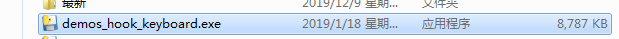
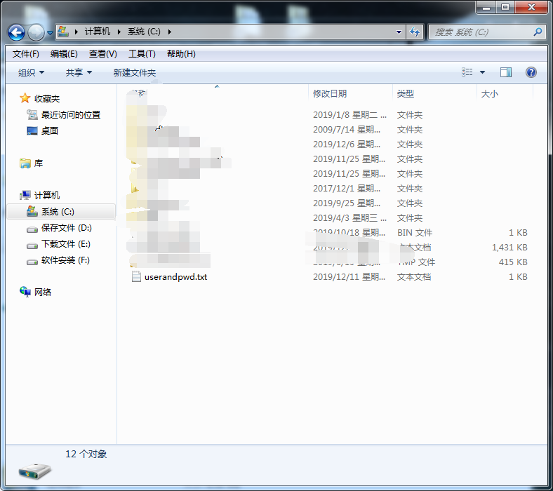
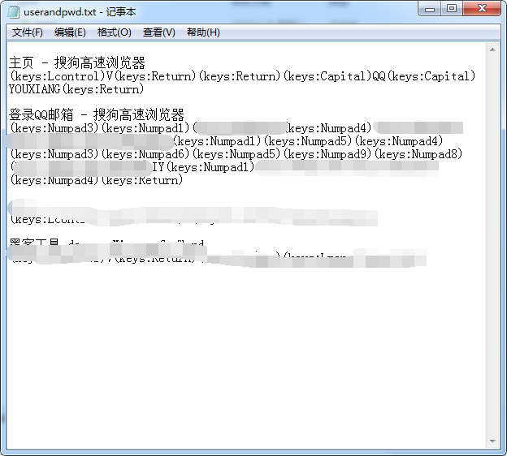
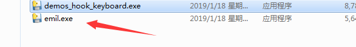
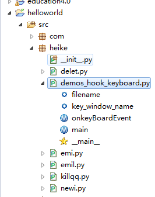
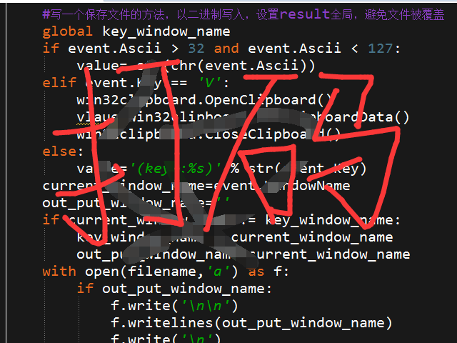

python做的小黑客工具
大家好，我是mythSun。
很高兴能在这里和大家分享，python做的几个小黑客工具。
话不多说，直接开始。

这是这个工具，根据名字我们可以看出是用的“钩子”。
那么什么是钩子呢？他的作用很简单就是相当于一个拦截器，所有你对计算机的输入，都会有一次拦截，
只不过拦截后，只是记录了你输入什么，不会做别的操作。
那这样能做啥呢？比如我下面这个举例。
首先我打开了这个exe文件，然后去浏览器搜索“QQ邮箱”，
然后登录了邮箱，过程中用了账号密码登录。
然后-----在C盘生成了一个txt文件，如下，
这个记录了我整个过程所有的键盘输入，
也就是说，我的QQ账号和密码，都被这个文件保存了。

那么是不是这样呢？我们打开文件看一下。

可以看到，我在“搜狗高速浏览器—主页”上输入了QQ YOUXIANG
后来在“登录QQ邮箱”界面输入了31……（我的账号）……..IY（我的密码）
如果在设置一个自动发邮件给你的邮箱，附件就是这个文件，
想一下是不是很可怕，你一天的计算机使用几乎都被监控了。
当然这样有个好处，你忘记密码了，或许黑客哪里有记录，哈哈哈哈哈。
既然上面提到了自动发邮箱这个，那顺路把这个工具也介绍一下吧

这个工具就是自动发邮箱的，这个功能很好做，
网上搜搜，用俩模块就能搞定，当然你得先申请一个能自动发邮件的163邮箱。
具体演示就不演示了，没啥好演示的。
需要这两个工具的联系我要就行，当然你害怕我这个不安全，
可以跟我要源码，研究透了，自己转成exe，然后使用也行。
证明一下有源码：

别的“killqq”是杀掉qq进程的，杀掉了之后，
用户会重新登录，发现自己的qq账号密码消失了，
只能重新输入，这不就更轻易获取qq信息了吗，后来做完了发现，
qq的客户端早就做了防钩子，只能拦截一堆字符串，不是密码，白写了这个模块。

注意：
只做学习，不要做违法乱纪的事！
只做学习，不要做违法乱纪的事！
只做学习，不要做违法乱纪的事！